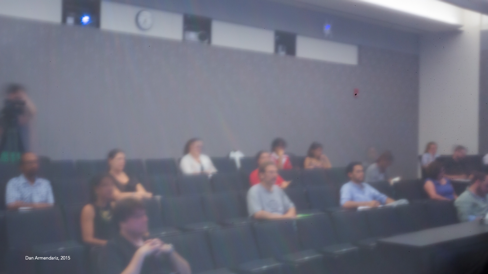
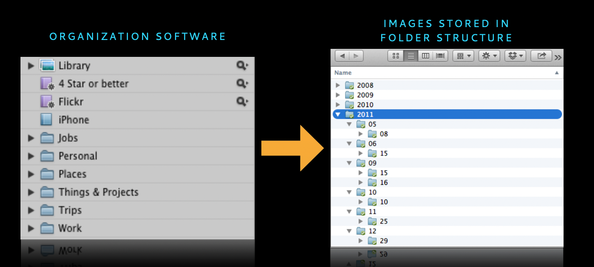
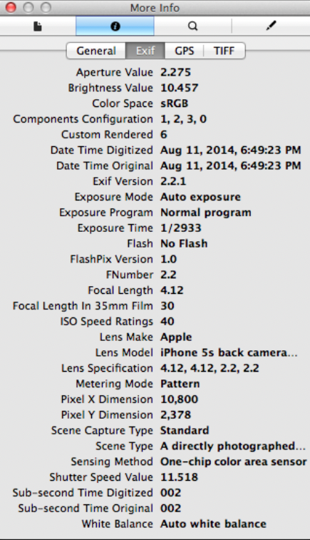
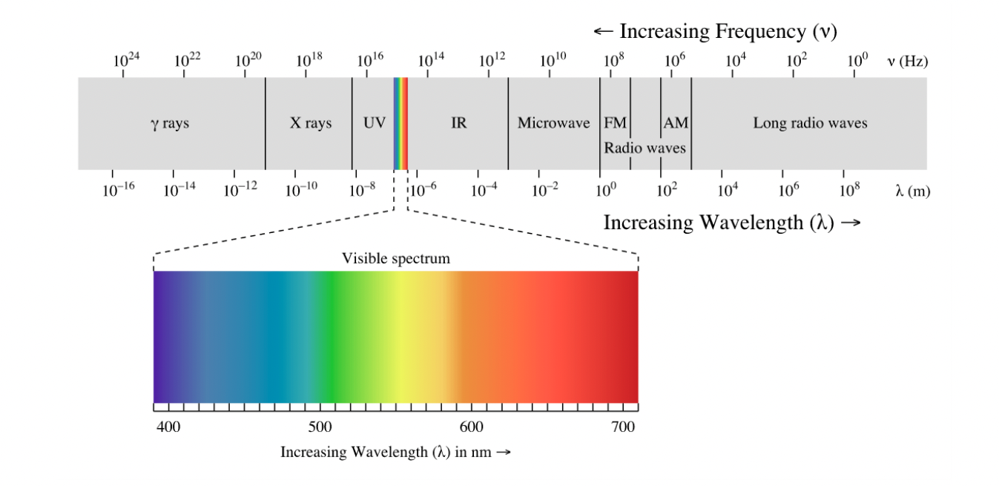
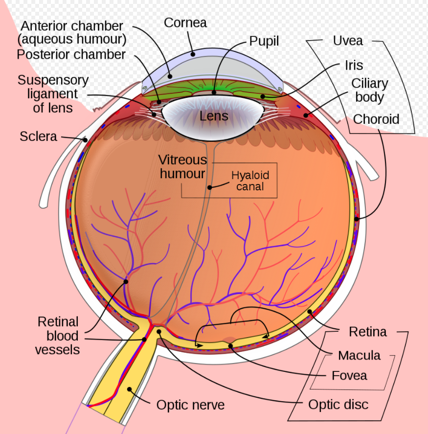
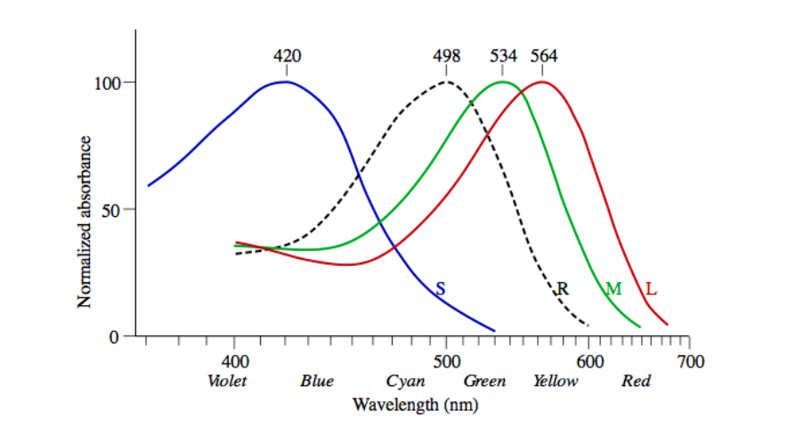

Lecture 2: Software Tools & Light
Project 1
介绍 project 1 的内容，之后会单独介绍。
Pinhole Lenses
在 Lecture 1 中利用 pinhole lenses 拍摄的照片 "高清版" 如下图所示：

我们现在看到的这张照片并非原始照片。由于手工制作的 pinhole lenses 本身质量问题，原始图片偏黑白，因此老师简单地提高了对比度，但基本上保留了原始图片的其它状态。这张照片存在哪些问题？
- 墙上有一些斜斜的线条，隐约能看到彩虹：可能是由 pinhole lenses 的质量加上后期拉高对比度导致。
- 有偏色，白平衡不准
- 模糊：pinhole lenses 的质量差 (如孔不够小导致图片解析度不高)、曝光时间长 (23s)
- 照片中部偏东南方向有一颗体积较大的灰尘
- 右上角有过曝、右下角有暗角
Software Tools
市面上有一部分软件可以帮助摄影师做后期处理：
- Apple Aperture (已不再更新)
- Adobe
- Lightroom/Lightroom Mobile Lightroom 系列面向摄影师，强化照片管理和后期
- Photoshop/Photoshop Express Photoshop 系列面向设计师，强化像素级的图片编辑功能
- Filterstorm (iPhone/iPad)
- Instagram (smartphones)
- PhaseOne
- CaptureOne
- MediaPro
- etc...
还有一部分软件可以帮助摄影师操控相机，实现远程控制快门、按固定周期在给定时间范围内重复按快门等功能。
Organization Techniques
照片管理是令摄影师比较头疼的事情之一。通常由三种管理方式：
- 手动：利用操作系统的层级文件结构来组织
- 托管：依靠软件，如 Lightroom 提供图片管理工具
- 给每张图片打分 (#stars)，按分数整理
- 给每张图片打标签，按标签整理，标签选择不能过于随意，否则容易变得无法维护
- 手动 + 托管：用文件系统管理原始文件，用软件提供的管理工具做索引

Metadata
每个照片文件不仅存储着图像数据本身，也默默地存放了一些元数据，这些元数据可能包括：
- 曝光细节 (exposure details)
- 曝光模式 (exposure mode)
- 相机类型和配置
- 镜头类型和配置
- 拍摄地理位置
- 拍摄时间
- 版权信息
- 照片管理软件的元信息，如软件制造商、关键词、打分 (ratings) 等等
例子如下图所示：

值得关注的是：地理位置 信息是比较敏感的信息，一不小心就有可能暴露你的家庭住址、常活动的地方。因此，常见的图片处理软件也会提供抹去敏感信息的功能；一些图片社交平台 (如 flickr) 会询问用户是否在上传照片时抹去相关敏感信息，甚至还会主动做一系列数据分析发现潜在的用户数据泄露问题。
Backup
时时刻刻注意备份你的照片。可以用物理备份 (独立移动硬盘) + 云服务商备份，加上个人设备的本地硬盘三副本保障。
Raw Processing
为了尽可能地保留照片拍摄的更多数据，许多相机都支持将图片保存为 raw 文件。但 raw 并非一个标准、统一的图片格式：不同品牌的相机 raw 格式不同、同一品牌不同型号的相机 raw 格式可能不同。每种 raw 格式都必须使用单独的程序解析，因此它的可移植性比较差，甚至在很久以后，也许你都找不到打开某个品牌陈年相机的 raw 格式解析工具。
为了改善这个问题，Adobe 在 2004 年发布了 DNG (Digital Negative Image File) 图片格式，旨在提供一种统一的 raw 格式，同时 Adobe 还开发了 Adobe DNG Converter，帮助摄影师将各种 raw 格式转换成统一的 DNG 格式。
Ethics
图像处理软件赋予了摄影师操控图中每个像素点的能力，但因此牺牲的是照片对现实的反映能力。人们无法判断任何一张照片是真实的 (genuine) 还是被修改过的 (manipulated)。当你用手机拍摄下某个场景时，可能手机里的拍照软件已经对它完成了轻度的后期加工，简单细微的后期加工不会引起人们对照片拍摄场景认识的改变，但用力过猛或者刻意为之则可以引发人们对一个场景的看法、甚至对某种认识、某种价值取向的改变。
老师在课堂上分享了一篇文章：历史上著名的 P 图事件 (Photo Tampering Throughout History)，有兴趣也可以看看。同时老师也提到，在课程布置的项目要求中，会介绍清楚图像处理的界限 (where the line is)。
Light
光具有波粒二象性 (wave-particle duality)。其波动性对于人眼的感受是色彩，下图即为电磁波谱 (electromagnetic spectrum) 图：

其中可见光的波长范围在 380nm 到 750 nm 之间，它与太阳电磁辐射中强度最大的光谱恰好一致，光的波动性还体现在光波运动的方向，即所谓偏振。光的粒子性对于人眼的感受是强度 (intensity)，可以简单理解成光的强度越大，一定时间内进入人眼的光子 (photon) 数量越多。
The Anatomy of Eyes
下图是人眼的解剖图：

其中黄斑区 (macula) 的正中间存在一个结构叫中心凹 (fovea)，负责人眼正中心视野，对于人眼极其重要，在中心凹上存在两种细胞：视锥细胞 (cones) 和视杆细胞 (rods)，前者负责感知不同波段的光，即色彩，擅长捕捉画面细节；后者能够帮助人眼在弱光环境下运作，擅长捕捉光影移动。在中心凹中，越靠近中心 cones 越多、rods 越少，甚至在最中心出没有 rods，因此在夜晚，想捕捉更多的细节，不要将眼睛聚焦在亮点上，而是稍微移开一些。cones 和 rods 的对比如下所示：
| Property | Rods | Cones |
|---|---|---|
| Vision Type | Night Vision | Day Vision |
| Light Sensitivity | More | Less |
| Foveal Concentration | Low | High |
| Relative Presence | 22 | 1 |
| Primary Stimulus | Monochromatic (black/white) | Trichomatic (color) |
| Detection | Motion | Detail |
不同的 cones 负责感受不同波长的光，其中负责中 (M) 长 (L) 波段 (绿光和红光) 的 cones 数量较多，负责短 (S) 波段 (蓝光) 的 cones 数量较少，其相对吸光度 (absorbance) 如下图所示：

图中 R 为 rods 的吸光度，可见 rods 对红光几乎没有反应，因此在弱光环境下开红光，你的视觉系统还能感知到画面内容，开蓝、绿光则会让你彻底失去对细节的感知。
References
- DGMD-E-10, Lecture 2: slides, video, project 1
- Photo Tampering Throughout History, blog
- Wikipedia: electromagnetic spectrum, visible spectrum, wave-particle duality, human eye, rod cell, cone cell